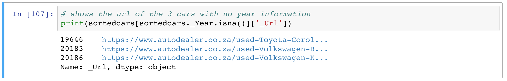
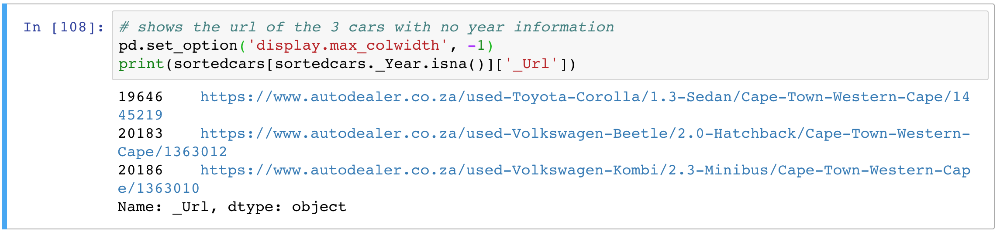

How can I display full (non-truncated) dataframe information in HTML when converting from Pandas dataframe to HTML?
I converted a Pandas dataframe to an HTML output using the DataFrame.to_html
function. When I save this to a separate HTML file, the file shows truncated
output.
For example, in my TEXT column,
df.head(1) will show
The film was an excellent effort...
instead of
The film was an excellent effort in deconstructing the complex social sentiments that prevailed during this period.
This rendition is fine in the case of a screen-friendly format of a massive Pandas dataframe, but I need an HTML file that will show complete tabular data contained in the dataframe, that is, something that will show the latter text element rather than the former text snippet.
How would I be able to show the complete, non-truncated text data for each
element in my TEXT column in the HTML version of the information? I would
imagine that the HTML table would have to display long cells to show the
complete data, but as far as I understand, only column-width parameters can be
passed into the DataFrame.to_html function.
Answer
Set the display.max_colwidth option to None (or -1 before version 1.0):
pd.set_option('display.max_colwidth', None)
set_option documentation
For example, in IPython, we see that the information is truncated to 50 characters. Anything in excess is ellipsized:

If you set the display.max_colwidth option, the information will be
displayed fully:

Suggest
pd.set_option('display.max_columns', None)
id (second argument) can fully show the columns.